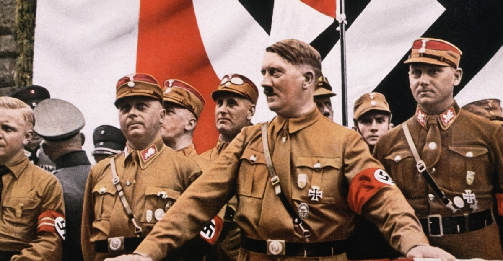
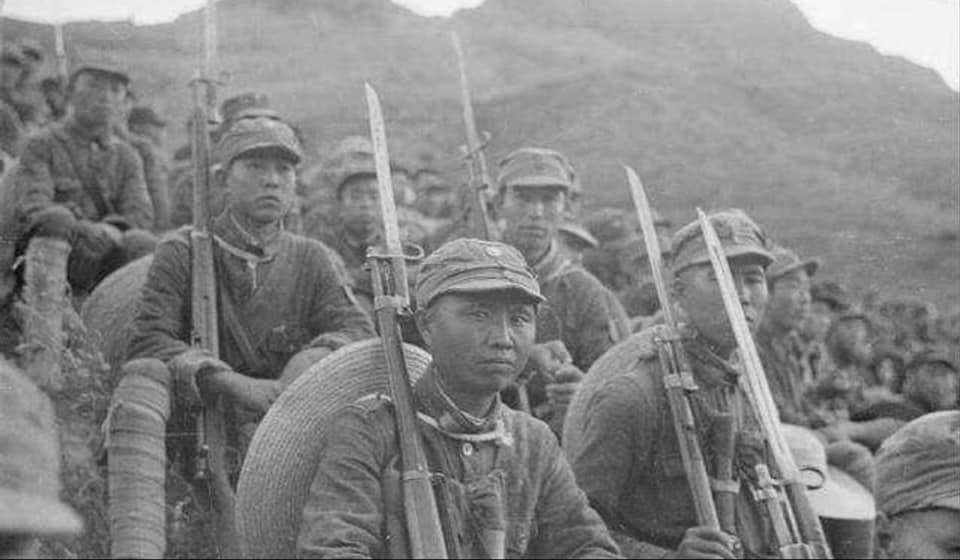
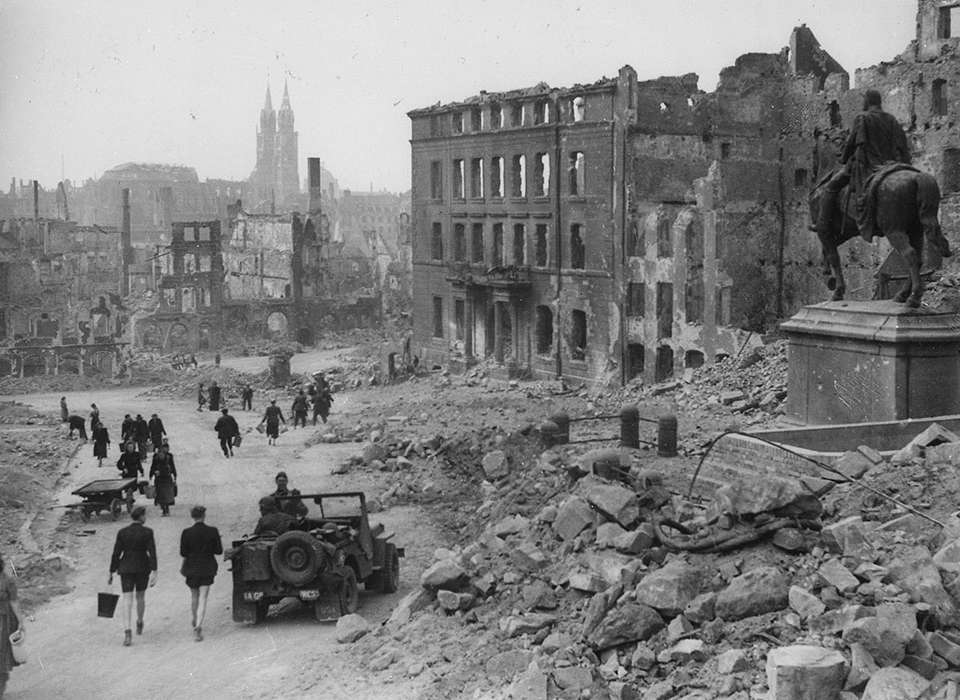
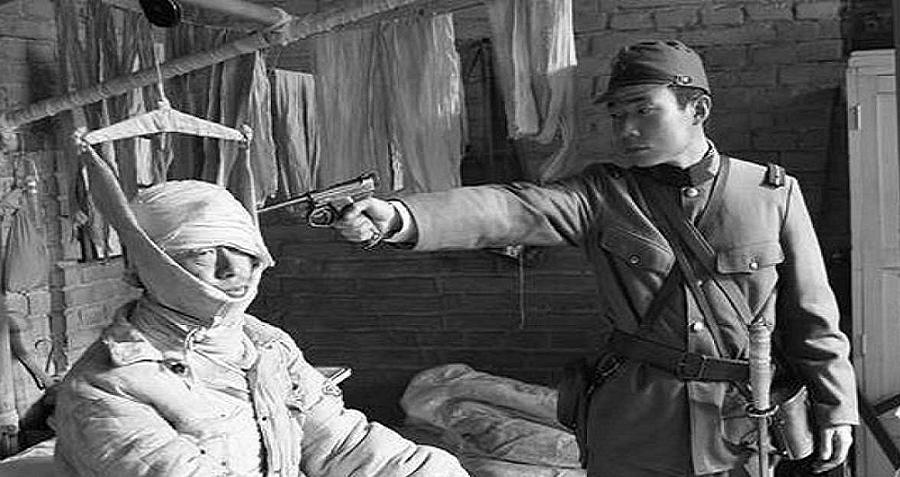

Background
Europe

World War I had radically altered the political European map, with the defeat of the Central Powers—including Austria-Hungary, Germany, Bulgaria and the Ottoman Empire—and the 1917 Bolshevik seizure of power in Russia, which led to the founding of the Soviet Union. Meanwhile, the victorious Allies of World War I, such as France, Belgium, Italy, Romania, and Greece, gained territory, and new nation-states were created out of the collapse of Austria-Hungary and the Ottoman and Russian Empires.
To prevent a future world war, the League of Nations was created during the 1919 Paris Peace Conference. The organisation's primary goals were to prevent armed conflict through collective security, military and naval disarmament, and settling international disputes through peaceful negotiations and arbitration.
Despite strong pacifist sentiment after World War I,[15] irredentist and revanchist nationalism emerged in several European states in the same period. These sentiments were especially marked in Germany because of the significant territorial, colonial, and financial losses imposed by the Treaty of Versailles. Under the treaty, Germany lost around 13 percent of its home territory and all its overseas possessions, while German annexation of other states was prohibited, reparations were imposed, and limits were placed on the size and capability of the country's armed forces.
The German Empire was dissolved in the German Revolution of 1918–1919, and a democratic government, later known as the Weimar Republic, was created. The interwar period saw strife between supporters of the new republic and hardline opponents on both the right and left. Italy, as an Entente ally, had made some post-war territorial gains; however, Italian nationalists were angered that the promises made by the United Kingdom and France to secure Italian entrance into the war were not fulfilled in the peace settlement. From 1922 to 1925, the Fascist movement led by Benito Mussolini seized power in Italy with a nationalist, totalitarian, and class collaborationist agenda that abolished representative democracy, repressed socialist, left-wing and liberal forces, and pursued an aggressive expansionist foreign policy aimed at making Italy a world power, and promising the creation of a "New Roman Empire".
Adolf Hitler, after an unsuccessful attempt to overthrow the German government in 1923, eventually became the Chancellor of Germany in 1933 when Paul Von Hindenburg and the Reichstag appointed him. He abolished democracy, espousing a radical, racially motivated revision of the world order, and soon began a massive rearmament campaign.[18] Meanwhile, France, to secure its alliance, allowed Italy a free hand in Ethiopia, which Italy desired as a colonial possession. The situation was aggravated in early 1935 when the Territory of the Saar Basin was legally reunited with Germany, and Hitler repudiated the Treaty of Versailles, accelerated his rearmament programme, and introduced conscription.
The United Kingdom, France and Italy formed the Stresa Front in April 1935 in order to contain Germany, a key step towards military globalisation; however, that June, the United Kingdom made an independent naval agreement with Germany, easing prior restrictions. The Soviet Union, concerned by Germany's goals of capturing vast areas of Eastern Europe, drafted a treaty of mutual assistance with France. Before taking effect, though, the Franco-Soviet pact was required to go through the bureaucracy of the League of Nations, which rendered it essentially toothless.[20] The United States, concerned with events in Europe and Asia, passed the Neutrality Act in August of the same year.
Hitler defied the Versailles and Locarno treaties by remilitarising the Rhineland in March 1936, encountering little opposition due to the policy of appeasement.[22] In October 1936, Germany and Italy formed the Rome–Berlin Axis. A month later, Germany and Japan signed the Anti-Comintern Pact, which Italy joined the following year.
Asia

The Kuomintang (KMT) party in China launched a unification campaign against regional warlords and nominally unified China in the mid-1920s, but was soon embroiled in a civil war against its former Chinese Communist Party allies[24] and new regional warlords. In 1931, an increasingly militaristic Empire of Japan, which had long sought influence in China[25] as the first step of what its government saw as the country's right to rule Asia, staged the Mukden Incident as a pretext to invade Manchuria and establish the puppet state of Manchukuo.
China appealed to the League of Nations to stop the Japanese invasion of Manchuria. Japan withdrew from the League of Nations after being condemned for its incursion into Manchuria. The two nations then fought several battles, in Shanghai, Rehe and Hebei, until the Tanggu Truce was signed in 1933. Thereafter, Chinese volunteer forces continued the resistance to Japanese aggression in Manchuria, and Chahar and Suiyuan.[27] After the 1936 Xi'an Incident, the Kuomintang and communist forces agreed on a ceasefire to present a united front to oppose Japan.
Aftermath

The Allies established occupation administrations in Austria and Germany. The former became a neutral state, non-aligned with any political bloc. The latter was divided into western and eastern occupation zones controlled by the Western Allies and the Soviet Union. A denazification programme in Germany led to the prosecution of Nazi war criminals in the Nuremberg trials and the removal of ex-Nazis from power, although this policy moved towards amnesty and re-integration of ex-Nazis into West German society.
Germany lost a quarter of its pre-war (1937) territory. Among the eastern territories, Silesia, Neumark and most of Pomerania were taken over by Poland,[295] and East Prussia was divided between Poland and the Soviet Union, followed by the expulsion to Germany of the nine million Germans from these provinces,[296][297] as well as three million Germans from the Sudetenland in Czechoslovakia. By the 1950s, one-fifth of West Germans were refugees from the east. The Soviet Union also took over the Polish provinces east of the Curzon line,[298] from which 2 million Poles were expelled;[297][299] north-east Romania,[300][301] parts of eastern Finland,[302] and the three Baltic states were incorporated into the Soviet Union.
In an effort to maintain world peace,[305] the Allies formed the United Nations, which officially came into existence on 24 October 1945,[306] and adopted the Universal Declaration of Human Rights in 1948 as a common standard for all member nations.[307] The great powers that were the victors of the war—France, China, the United Kingdom, the Soviet Union and the United States—became the permanent members of the UN's Security Council.[308] The five permanent members remain so to the present, although there have been two seat changes, between the Republic of China and the People's Republic of China in 1971, and between the Soviet Union and its successor state, the Russian Federation, following the dissolution of the Soviet Union in 1991. The alliance between the Western Allies and the Soviet Union had begun to deteriorate even before the war was over.
Germany had been de facto divided, and two independent states, the Federal Republic of Germany (West Germany) and the German Democratic Republic (East Germany),[310] were created within the borders of Allied and Soviet occupation zones. The rest of Europe was also divided into Western and Soviet spheres of influence.[311] Most eastern and central European countries fell into the Soviet sphere, which led to establishment of Communist-led regimes, with full or partial support of the Soviet occupation authorities. As a result, East Germany,[312] Poland, Hungary, Romania, Czechoslovakia, and Albania[313] became Soviet satellite states. Communist Yugoslavia conducted a fully independent policy, causing tension with the Soviet Union.
Post-war division of the world was formalised by two international military alliances, the United States-led NATO and the Soviet-led Warsaw Pact.[315] The long period of political tensions and military competition between them, the Cold War, would be accompanied by an unprecedented arms race and number of proxy wars throughout the world.
In Asia, the United States led the occupation of Japan and administered Japan's former islands in the Western Pacific, while the Soviets annexed South Sakhalin and the Kuril Islands.[317] Korea, formerly under Japanese rule, was divided and occupied by the Soviet Union in the North and the United States in the South between 1945 and 1948. Separate republics emerged on both sides of the 38th parallel in 1948, each claiming to be the legitimate government for all of Korea, which led ultimately to the Korean War.
The global economy suffered heavily from the war, although participating nations were affected differently. The United States emerged much richer than any other nation, leading to a baby boom, and by 1950 its gross domestic product per person was much higher than that of any of the other powers, and it dominated the world economy.[322] The UK and US pursued a policy of industrial disarmament in Western Germany in the years 1945–1948.[323] Because of international trade interdependencies this led to European economic stagnation and delayed European recovery for several years.
Recovery began with the mid-1948 currency reform in Western Germany, and was sped up by the liberalisation of European economic policy that the Marshall Plan (1948–1951) both directly and indirectly caused.[326][327] The post-1948 West German recovery has been called the German economic miracle.[328] Italy also experienced an economic boom[329] and the French economy rebounded.[330] By contrast, the United Kingdom was in a state of economic ruin,[331] and although receiving a quarter of the total Marshall Plan assistance, more than any other European country,[332] it continued in relative economic decline for decades.
The Soviet Union, despite enormous human and material losses, also experienced rapid increase in production in the immediate post-war era.[334] Japan recovered much later.[335] China returned to its pre-war industrial production by 1952.
Impact
Casualties and War Crimes

Estimates for the total number of casualties in the war vary, because many deaths went unrecorded.[337] Most suggest that some 60 million people died in the war, including about 20 million military personnel and 40 million civilians.[338][339][340] Many of the civilians died because of deliberate genocide, massacres, mass bombings, disease, and starvation.
The Soviet Union alone lost around 27 million people during the war,[341] including 8.7 million military and 19 million civilian deaths.[342] A quarter of the total people in the Soviet Union were wounded or killed.[343] Germany sustained 5.3 million military losses, mostly on the Eastern Front and during the final battles in Germany.
An estimated 11[345] to 17 million[346] civilians died as a direct or as an indirect result of Nazi racist policies, including mass killing of around 6 million Jews, along with Roma, homosexuals, at least 1.9 million ethnic Poles[347][348] and millions of other Slavs (including Russians, Ukrainians and Belarusians), and other ethnic and minority groups.[349][346] Between 1941 and 1945, more than 200,000 ethnic Serbs, along with gypsies and Jews, were persecuted and murdered by the Axis-aligned Croatian Ustaše in Yugoslavia.[350] Also, more than 100,000 Poles were massacred by the Ukrainian Insurgent Army in the Volhynia massacres, between 1943 and 1945.[351] At the same time, about 10,000–15,000 Ukrainians were killed by the Polish Home Army and other Polish units, in reprisal attacks.
In Asia and the Pacific, between 3 million and more than 10 million civilians, mostly Chinese (estimated at 7.5 million[353]), were killed by the Japanese occupation forces.[354] The most infamous Japanese atrocity was the Nanking Massacre, in which fifty to three hundred thousand Chinese civilians were raped and murdered.[355] Mitsuyoshi Himeta reported that 2.7 million casualties occurred during the Sankō Sakusen. General Yasuji Okamura implemented the policy in Heipei and Shantung.
Axis forces employed biological and chemical weapons. The Imperial Japanese Army used a variety of such weapons during its invasion and occupation of China (see Unit 731)[357][358] and in early conflicts against the Soviets.[359] Both the Germans and the Japanese tested such weapons against civilians,[360] and sometimes on prisoners of war.
he Soviet Union was responsible for the Katyn massacre of 22,000 Polish officers,[362] and the imprisonment or execution of thousands of political prisoners by the NKVD, along with mass civilian deportations to Siberia, in the Baltic states and eastern Poland annexed by the Red Army.
The mass bombing of cities in Europe and Asia has often been called a war crime, although no positive or specific customary international humanitarian law with respect to aerial warfare existed before or during World War II.[364] The USAAF firebombed a total of 67 Japanese cities, killing 393,000 civilians and destroying 65% of built-up areas.
Genocide, concentration camps, and slave labour

Nazi Germany was responsible for the Holocaust (which killed approximately 6 million Jews) as well as for killing 2.7 million ethnic Poles[366] and 4 million others who were deemed "unworthy of life" (including the disabled and mentally ill, Soviet prisoners of war, Romani, homosexuals, Freemasons, and Jehovah's Witnesses) as part of a programme of deliberate extermination, in effect becoming a "genocidal state".[367] Soviet POWs were kept in especially unbearable conditions, and 3.6 million Soviet POWs out of 5.7 million died in Nazi camps during the war.[368][369] In addition to concentration camps, death camps were created in Nazi Germany to exterminate people on an industrial scale. Nazi Germany extensively used forced labourers; about 12 million Europeans from German-occupied countries were abducted and used as a slave work force in German industry, agriculture and war economy.
The Soviet Gulag became a de facto system of deadly camps during 1942–43, when wartime privation and hunger caused numerous deaths of inmates,[371] including foreign citizens of Poland and other countries occupied in 1939–40 by the Soviet Union, as well as Axis POWs.[372] By the end of the war, most Soviet POWs liberated from Nazi camps and many repatriated civilians were detained in special filtration camps where they were subjected to NKVD evaluation, and 226,127 were sent to the Gulag as real or perceived Nazi collaborators.
Japanese prisoner-of-war camps, many of which were used as labour camps, also had high death rates. The International Military Tribunal for the Far East found the death rate of Western prisoners was 27 per cent (for American POWs, 37 per cent),[374] seven times that of POWs under the Germans and Italians.[375] While 37,583 prisoners from the UK, 28,500 from the Netherlands, and 14,473 from the United States were released after the surrender of Japan, the number of Chinese released was only 56.
At least five million Chinese civilians from northern China and Manchukuo were enslaved between 1935 and 1941 by the East Asia Development Board, or Kōain, for work in mines and war industries. After 1942, the number reached 10 million.[377] In Java, between 4 and 10 million rōmusha (Japanese: "manual labourers"), were forced to work by the Japanese military. About 270,000 of these Javanese labourers were sent to other Japanese-held areas in South East Asia, and only 52,000 were repatriated to Java.
Occupation
In Europe, occupation came under two forms. In Western, Northern, and Central Europe (France, Norway, Denmark, the Low Countries, and the annexed portions of Czechoslovakia) Germany established economic policies through which it collected roughly 69.5 billion reichsmarks (27.8 billion US dollars) by the end of the war; this figure does not include the sizeable plunder of industrial products, military equipment, raw materials and other goods.[379] Thus, the income from occupied nations was over 40 percent of the income Germany collected from taxation, a figure which increased to nearly 40 percent of total German income as the war went on.
In the East, the intended gains of Lebensraum were never attained as fluctuating front-lines and Soviet scorched earth policies denied resources to the German invaders.[381] Unlike in the West, the Nazi racial policy encouraged extreme brutality against what it considered to be the "inferior people" of Slavic descent; most German advances were thus followed by mass executions.[382] Although resistance groups formed in most occupied territories, they did not significantly hamper German operations in either the East[383] or the West[384] until late 1943.
In Asia, Japan termed nations under its occupation as being part of the Greater East Asia Co-Prosperity Sphere, essentially a Japanese hegemony which it claimed was for purposes of liberating colonised peoples.[385] Although Japanese forces were sometimes welcomed as liberators from European domination, Japanese war crimes frequently turned local public opinion against them.[386] During Japan's initial conquest, it captured 4,000,000 barrels (640,000 m3) of oil (~5.5×105 tonnes) left behind by retreating Allied forces; and by 1943, was able to get production in the Dutch East Indies up to 50 million barrels (~6.8×106 t), 76 per cent of its 1940 output rate.
Home fronts and production
In Europe, before the outbreak of the war, the Allies had significant advantages in both population and economics. In 1938, the Western Allies (United Kingdom, France, Poland and the British Dominions) had a 30 percent larger population and a 30 percent higher gross domestic product than the European Axis powers (Germany and Italy); if colonies are included, the Allies had more than a 5:1 advantage in population and a nearly 2:1 advantage in GDP.[387] In Asia at the same time, China had roughly six times the population of Japan but only an 89 percent higher GDP; this is reduced to three times the population and only a 38 percent higher GDP if Japanese colonies are included.
The United States produced about two-thirds of all the munitions used by the Allies in WWII, including warships, transports, warplanes, artillery, tanks, trucks, and ammunition.[388] Though the Allies' economic and population advantages were largely mitigated during the initial rapid blitzkrieg attacks of Germany and Japan, they became the decisive factor by 1942, after the United States and Soviet Union joined the Allies, as the war largely settled into one of attrition.[389] While the Allies' ability to out-produce the Axis is often attributed[by whom?] to the Allies having more access to natural resources, other factors, such as Germany and Japan's reluctance to employ women in the labour force,[390] Allied strategic bombing,[391] and Germany's late shift to a war economy[392] contributed significantly. Additionally, neither Germany nor Japan planned to fight a protracted war, and had not equipped themselves to do so.[393] To improve their production, Germany and Japan used millions of slave labourers;[394] Germany used about 12 million people, mostly from Eastern Europe,[370] while Japan used more than 18 million people in Far East Asia.
Advances in technology and warfare

Aircraft were used for reconnaissance, as fighters, bombers, and ground-support, and each role was advanced considerably. Innovation included airlift (the capability to quickly move limited high-priority supplies, equipment, and personnel);[395] and of strategic bombing (the bombing of enemy industrial and population centres to destroy the enemy's ability to wage war).[396] Anti-aircraft weaponry also advanced, including defences such as radar and surface-to-air artillery. The use of the jet aircraft was pioneered and, though late introduction meant it had little impact, it led to jets becoming standard in air forces worldwide.[397] Although guided missiles were being developed, they were not advanced enough to reliably target aircraft until some years after the war.
Advances were made in nearly every aspect of naval warfare, most notably with aircraft carriers and submarines. Although aeronautical warfare had relatively little success at the start of the war, actions at Taranto, Pearl Harbor, and the Coral Sea established the carrier as the dominant capital ship in place of the battleship.[398][399][400] In the Atlantic, escort carriers proved to be a vital part of Allied convoys, increasing the effective protection radius and helping to close the Mid-Atlantic gap.[401] Carriers were also more economical than battleships because of the relatively low cost of aircraft[402] and their not requiring to be as heavily armoured.[403] Submarines, which had proved to be an effective weapon during the First World War,[404] were anticipated by all sides to be important in the second. The British focused development on anti-submarine weaponry and tactics, such as sonar and convoys, while Germany focused on improving its offensive capability, with designs such as the Type VII submarine and wolfpack tactics.[405][better source needed] Gradually, improving Allied technologies such as the Leigh light, hedgehog, squid, and homing torpedoes proved victorious over the German submarines.
Land warfare changed from the static front lines of trench warfare of World War I, which had relied on improved artillery that outmatched the speed of both infantry and cavalry, to increased mobility and combined arms. The tank, which had been used predominantly for infantry support in the First World War, had evolved into the primary weapon.[407] In the late 1930s, tank design was considerably more advanced than it had been during World War I,[408] and advances continued throughout the war with increases in speed, armour and firepower.[citation needed] At the start of the war, most commanders thought enemy tanks should be met by tanks with superior specifications.[409] This idea was challenged by the poor performance of the relatively light early tank guns against armour, and German doctrine of avoiding tank-versus-tank combat. This, along with Germany's use of combined arms, were among the key elements of their highly successful blitzkrieg tactics across Poland and France.[407] Many means of destroying tanks, including indirect artillery, anti-tank guns (both towed and self-propelled), mines, short-ranged infantry antitank weapons, and other tanks were used.[409] Even with large-scale mechanisation, infantry remained the backbone of all forces,[410] and throughout the war, most infantry were equipped similarly to World War I.[411] The portable machine gun spread, a notable example being the German MG34, and various submachine guns which were suited to close combat in urban and jungle settings.[411] The assault rifle, a late war development incorporating many features of the rifle and submachine gun, became the standard postwar infantry weapon for most armed forces.
Most major belligerents attempted to solve the problems of complexity and security involved in using large codebooks for cryptography by designing ciphering machines, the most well known being the German Enigma machine.[413] Development of SIGINT (signals intelligence) and cryptanalysis enabled the countering process of decryption. Notable examples were the Allied decryption of Japanese naval codes[414] and British Ultra, a pioneering method for decoding Enigma benefiting from information given to the United Kingdom by the Polish Cipher Bureau, which had been decoding early versions of Enigma before the war.[415] Another aspect of military intelligence was the use of deception, which the Allies used to great effect, such as in operations Mincemeat and Bodyguard.
Other technological and engineering feats achieved during, or as a result of, the war include the world's first programmable computers (Z3, Colossus, and ENIAC), guided missiles and modern rockets, the Manhattan Project's development of nuclear weapons, operations research and the development of artificial harbours and oil pipelines under the English Channel.[citation needed] Penicillin was first mass-produced and used during the war (see Stabilization and mass production of penicillin).